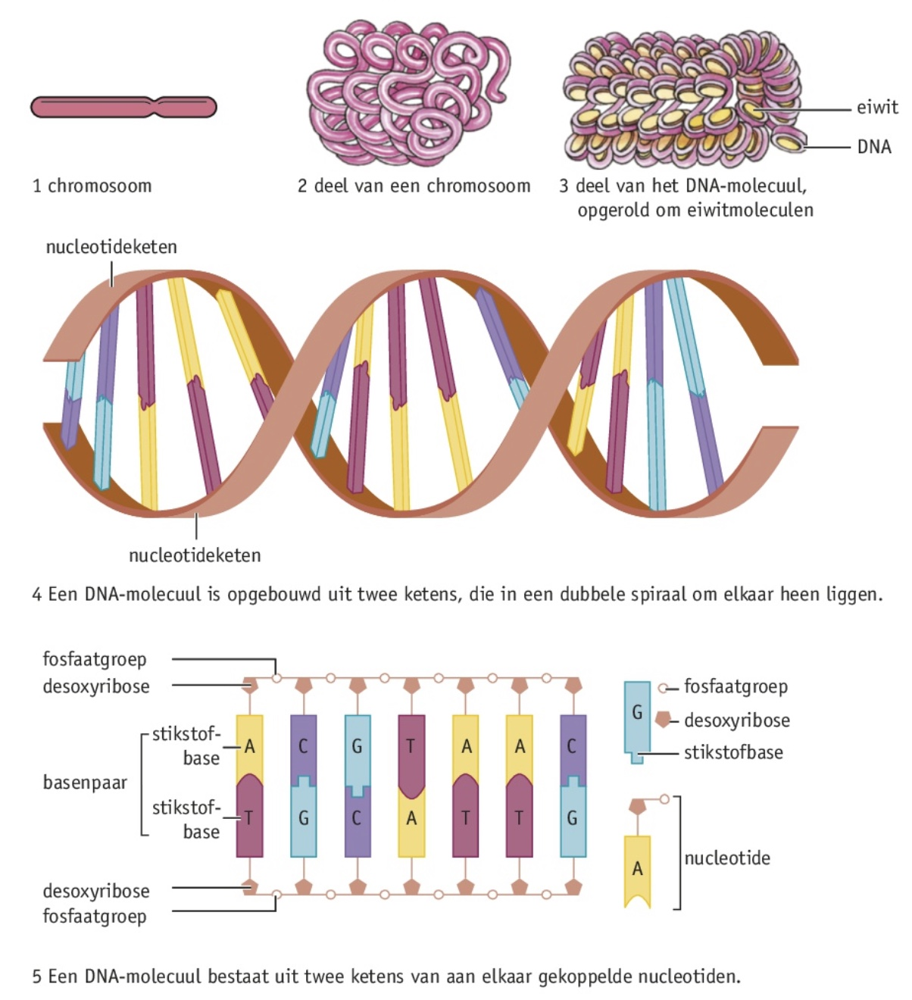

Je kunt omschrijven wat het fenotype en wat het genotype van een organisme is.
Je kunt omschrijven wat DNA-sequentie en genexpressie betekenen.
Je kunt uitleggen dat een fenotype tot stand komt door de combinatie van genotype en de invloed van milleufactoren.

Fenotype en genotype
Alle waarneembare eigenschappen van een individu noem je het fenotype. De informatie voor erfelijke eigenschappen ligt op de chromosomen. Bij bevruchting komt de informatie van de ouders bij elkaar. De informatie voor alle erfelijke eigenschappen van een individu heet het genotype.
Chromosomen
De rangschikking van chromosomen in een cel heet een karyotype. Er kunnen 22 gelijke chromosomenparen worden gevormd, genaamd autosomen. De chromosomen in een paar zijn even lang en heten homologe chromosomen. Het 23e paar zijn geslachtschromosomen, bij mannen zijn ze niet aan elkaar gelijk, bij vrouwen wel.
Genen
Een gen/erffactor is een deel van een chromosoom dat de informatie bevat voor 1 of meerder erfelijke eigenschappen. DNA is opgebouwd uit vier verschillende nucleotiden. Een nucleotide bestaat uit een fosfaatgroep, desoxyribose en een stikstofbase. DNA bevindt zich bij dieren, planten en schimmels in de kern en in de mitochrondriën en bij planten ook in de bladgroenkorrels. Alle DNA-moleculen in een cel noem je het genoom van een organisme. Er zijn 4 verschillende stikstofbasen: adenine (A), thymine (T), cytosine (C) en guanine (G). De stikstofbasen vormen vaste paren: basenparing (AT en CG).